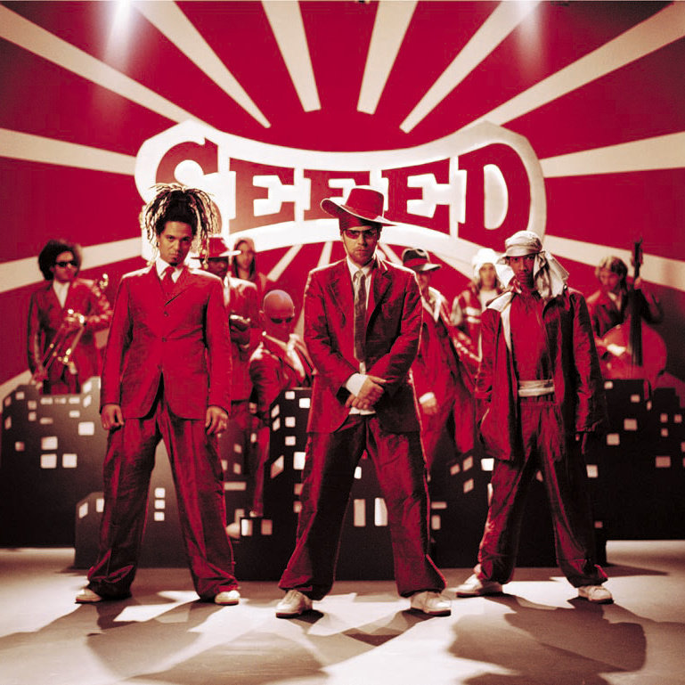

To really understand Seeed, you have to look at her story. At the end of the nineties, eleven musicians came together in Berlin to play live together, as a band collective and party task force without a double bottom. There is no blueprint, no master plan, no star, no hit. There's just the music and the magic of the moment. Not much has changed since then - except, of course, that everything has changed: In 2020, these musicians will play seven sold-out concerts in their hometown alone, in front of a total of almost 150,000 spectators. Against all odds, Seeed have made it to the top with positivity and open-mindedness. It goes without saying how important this is again today. Seven years have passed since their last studio album “Seeed”. That's a long time, not just by Instagram story-age standards. Dancehall - the sound aesthetic that once made Seeed socially acceptable in Germany - has now become a standard in global streaming pop. And German rap, which had just recovered from a serious crisis, has risen to become the perceived sole ruler of charts and festivals. Seeed have always kept this genre at arm's length. Nevertheless, they have had a significant influence with their naturalness in shaping German in such a way that it sounds well-rounded and is even fun on the dance floor. Pop music from Germany in its current form: never without this team.
So how do you crash your kids' party with a new album? Seeed have opened up and renewed to stay true to themselves. “BAM BAM” is the first Seeed album entirely in German. More members than ever contributed their testimonials and demos. Songwriter friends such as Trettmann, Sway Clarke, Deichkind and Daniel Stoyanov from the band Malky were also involved. The songs were developed in close cooperation with the producer team The Krauts (including Peter Fox, Miss Platnum, Marteria). The sound is Seeed, of course: urban, voluminous, worldly pop music with a Berlin attitude and influences from London to Lagos. Above all, it's 2019. "BAM BAM" sounds like a new beginning, like getting up, going out, making the world a little more colorful and better. This also makes the record a statement for a new beginning. After the painful loss of Demba Nabé in May 2018, "BAM BAM" is the first album since 2000 where one of the eleven founding members is missing. At the very end there is a song that Demba recorded long before his death. Seeed put him on the album practically unchanged. It's a tribute to a friend and free spirit without whom this band wouldn't be what it is. And it's a nod to the power of music that never ends. Not as long as there is love and people who carry it through the world in their hearts. David Bortot. Reference : https://www.seeed.de/#Bio